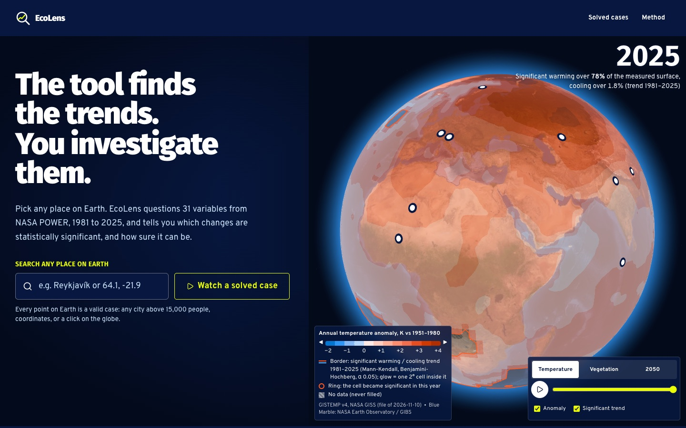
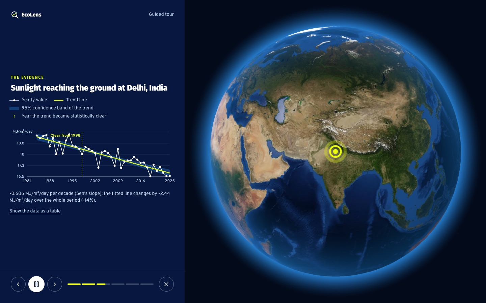
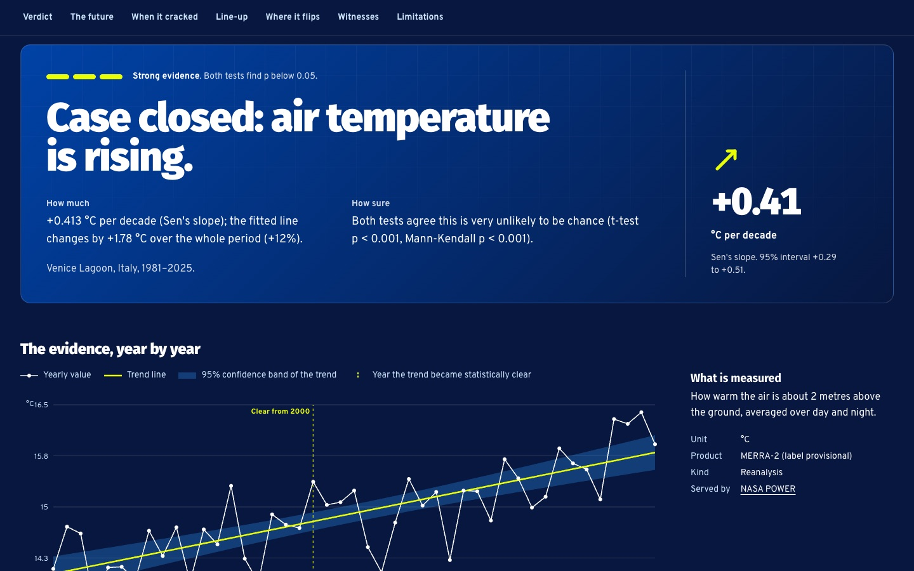
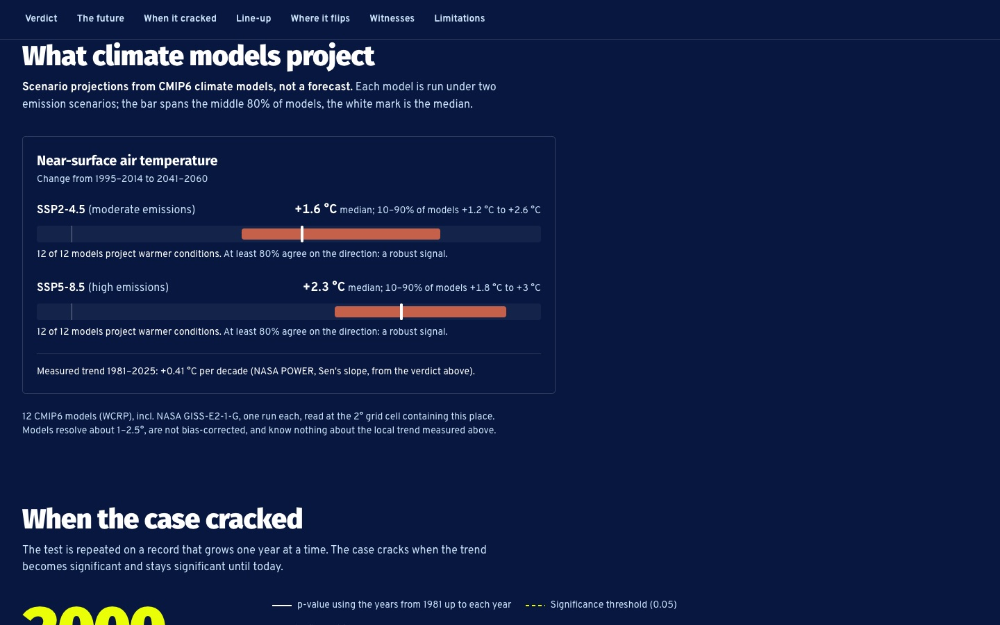
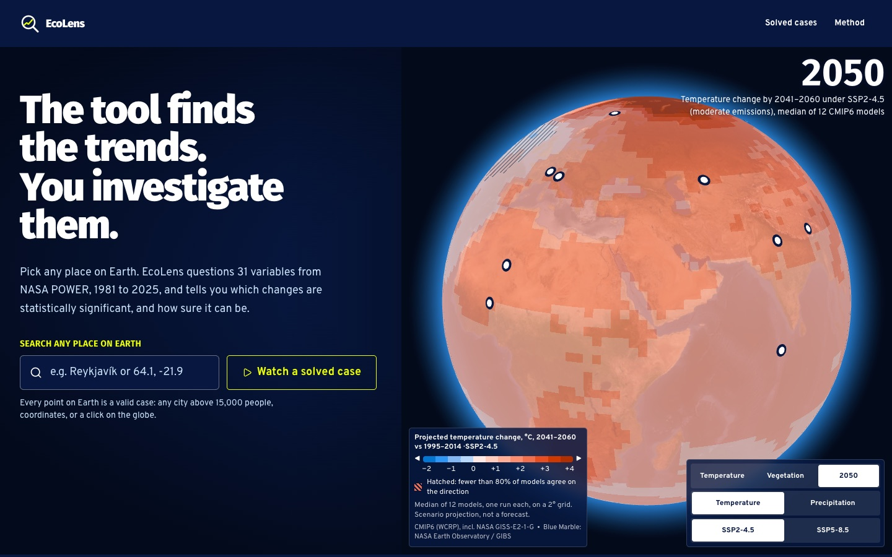

NASA Space Apps Challenge 2026 · Be An Earth System Trend Detective!
EcoLens
The tool finds the trends. You investigate them.
- Team
- project_nasa
- Members
- Marco Manzotti, Dario Bottari, Miles McCrudden

The problem
Hundreds of variables. Which ones are really changing, here?
- NASA POWER alone lists 1,388 monthly variables. A student cannot know where to start.
- A line drawn through noisy data is not a trend until it has been tested.
- The same variable can rise in one place and fall a short way off.
- Data portals give numbers. Students and the public need a guide that explains them.
From the live app · Delhi, sunlight reaching the ground, 1981–2025
How it works
One place, six questions.
Pick a place
34,216 cities, coordinates, or a click on the globe.
Test the trend
Least squares + t-test and Mann-Kendall + Sen's slope. Significant only if both agree.
The line-up
31 NASA POWER variables ranked, corrected for multiple testing.
Witnesses
A second record of the same quantity: GISTEMP v4, NOAA stations.
When it cracked
The year the trend became significant, and a rough "years to detect".
2050
What 12 CMIP6 climate models project. Scenarios, not forecasts.

A real case · Venice Lagoon, air temperature, 1981–2025
Case closed: the air is warming.
CMIP6, 2041–2060 vs 1995–2014: +1.6 °C (SSP2-4.5) and +2.3 °C (SSP5-8.5), median of 12 models; 12 of 12 project warming. Scenario projections, not forecasts.


The data
NASA data do the work.
- NASA POWERLive, no login: 31 variables, monthly, 1981–2025, point and 10°×10° grid. Products: MERRA-2 reanalysis, CERES SYN1deg, GEWEX SRB.
- GISTEMP v4 (NASA GISS)Globe time-lapse: a trend test in every 2° cell for every year; temperature witness.
- MODIS Terra NDVI (via GIBS)Vegetation time-lapse 2001–2025: greening and browning.
- Blue Marble (via GIBS)The Earth on the globe, up to 8K.
- Also usedCMIP6 (WCRP, 12 models incl. NASA GISS-E2-1-G), NOAA station records, GeoNames, Natural Earth.

Scientific rigour
Every number is computed. Every limit is said.
What the engine does
- Annual or seasonal means, at least 10 valid years.
- "Significant" only when the t-test and Mann-Kendall agree at α = 0.05.
- Benjamini-Hochberg correction across the line-up and the map.
- Hamed-Rao correction for autocorrelation in the verdict when it exceeds 0.3.
- Checked against numpy, scipy and pymannkendall in automated tests.
- No AI produces any number or verdict.
What it tells you it cannot do
- Only straight-line trends. A trend shows that a value changed, not why.
- "Years to detect" is a rough estimate adapted from Weatherhead et al. (1998), not a prediction.
- Line-up, map and emergence year use p-values without the autocorrelation correction.
- Some source-product labels are provisional: POWER does not always name them.
- CMIP6: scenarios, not forecasts; 1–2.5° models, no bias correction.
Your turn
Open a case anywhere on Earth.
Live app, no login
Open-source code (MIT)
Four solved cases to start from
Built for high-school and college students and a curious public: plain-language definitions, a guided tour, and the evidence behind every verdict.
Code and texts written with the help of an AI coding assistant (Claude, by Anthropic) under the team's direction and review. The app itself uses no AI. EcoLens is an independent project and is not endorsed by NASA, NOAA or WCRP.
EcoLens · project_nasaNASA Space Apps Challenge 2026